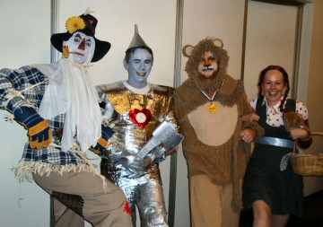

| Music Trivia Night - 8 August 2009 |
|
Definitely not a trivial occasion!

From Michael Jackson's Thriller to
The Wizard of Oz, there was plenty of competition for
the best-dressed table at North Ryde Soccer Club's second annual Music Trivia
Night. The event was a huge success with well over 100 people packing the room at
Eastwood Rugby Club to join in the fun.
'This is our major social event of the year and is a fun way to bring our parents,
committee, supporters and sponsors together to celebrate a great season,' said
North Ryde Soccer Club President, Mark Simpson.
The night combined a variety of musical competitions including a Singing Bee and
a tough test of Music trivia knowledge. With everyone encouraged to dress up to a
musical theme, there were tables of punks, classical music conductors, surfing babes,
the cast of The Wizard of Oz, a gorgeous lady (the
president's wife) dressed up as Tony Basil (of hit song 'Mickey' fame) and a huge
tribute to Michael Jackson from supporters of the club's Under Seven teams.
But the highlight of the night was the Air Guitar contest. This pitted 12 contestants
against each other, strutting their stuff to Deep Purple, Derek and the Dominoes and
AC/DC. Whilst some decided to go mellow and acoustic, it was the hard-rockin' girls
that grabbed the big prizes.
John Spencer, a life member and former president of North Ryde Soccer Club, was
there to present the major prize on behalf of Luna Park. He was excited to see the
enthusiasm of the current generation of North Ryde Soccer parents and to see the club
was in such good shape. On his table was Terry Townsend from TWT, a publication that
is a great supporter of all local sporting clubs, including North Ryde Soccer Club.
Another great supporter of the club is North Ryde RSL who operates Eastwood Rugby
Club.
One of the most popular sponsors on the night was Tony and the team from the Little
Bottler at Callaghan Street Ryde. Whilst they didn't do so well in the trivia, they
helped out with great prizes for the winners.
North Ryde Soccer Club have had a great season with many teams reaching the finals
and seven teams finishing in the top three in their league. 'We have well over 300
players from U6 to really old blokes,' said Mark Simpson. 'We all enjoy our football
and each other's company at social events like this one.'
|